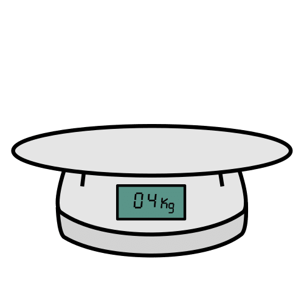
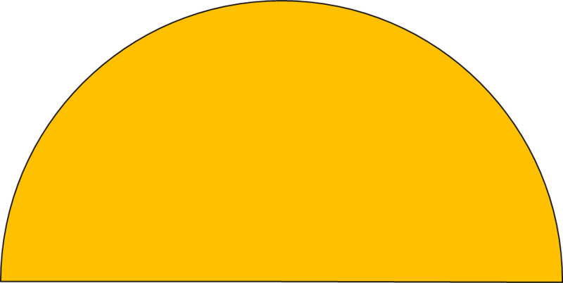

Instrumento que sirve para medir la masa de los objetos.
Ejemplo:
El cocinero pesó la harina en la balanza.
Báscula
Definición:
Aparato que sirve para medir pesos.
Ejemplo:
Utiliza la báscula para añadir los ingredientes a la empanada.
Semicírculo
Definición:
Figura geométrica formada por la mitad de un círculo.
Ejemplo:
Dibuja un semicírculo y pega en él las imágenes.
Conocimientos previos
Lumen dice Recuerda bien las normas de una asamblea
Presta atención al tema.
Respeta el turno para hablar.
No te desvíes del tema.
Participar todos y todas.
Buscar que se pueda llegar a un acuerdo entre todos.
Para comenzar , primero vamos a recordar.
Nos sentamos todos y todas en el suelo en forma de semicírculo. Vamos a pensar y contestar a estas preguntas. No olvides levantar la mano para hablar y esperar nuestro turno de palabra.